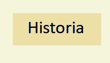
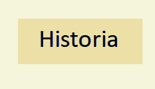

ARMAS El (nihontō)(日本刀, Espada japonesa), conocido más comúnmente en occidente como katana, es el arma más estrechamente relacionada con el samurái e incluso se le llegó a considerar durante el periodo Edo como «el alma del samurái». Un samurái nunca abandonaba su espada, aun en tiempos de paz.105 El mejor regalo que podía recibir un samurái de parte de su daimyō era una espada forjada por un célebre maestro. Las primeras espadas utilizadas por soldados yamato eran rectas, algunas con empuñadura en forma de bulbo y eran conocidas como «espada con cabeza de mazo». Algunas otras, como las llamadas «espadas coreanas», tenían empuñadura en forma de argolla terminando con el aspecto de la silueta de algún animal. Estas armas medían 90 centímetros en promedio. La fuerza impresionante de la katana se debía a su curvatura, que hacía posible que el corte producido pudiera incluso seccionar el hueso del oponente. Ya que se la debía de empuñar con ambas manos, el portador de la espada se tenía que colocar en ángulo recto con respecto al enemigo.Los samuráis no utilizaban ningún escudo para su protección, dado que la katana era un arma defensiva y ofensiva al mismo tiempo. Debido a su gran resistencia, podía golpear el arma del oponente para desviar el ataque y acto seguido asestar un golpe mortal. PROYECTILESDurante la mayor parte de la historia de los samuráis, el arco japonés (llamado yumi) fue su arma preferida y solo se solía recurrir a la espada al descender del caballo y entablar combate cuerpo a cuerpo.Los samuráis solían ser expertos en el kyūba no michi «camino del arco y el caballo». Los arcos utilizados en aquella época se asemejan en gran medida a los que se utilizan actualmente en el kyūdō. El arco tenía que ser levantado a la altura de la cabeza del jinete para poder disparar adecuadamente. La práctica del caballo y el arco dieron lugar al yabusame, el cual es practicado hasta nuestros días. La técnica del uso del arco a caballo necesitaba de mucha práctica, ya que solo se podía disparar por el lado izquierdo del jinete y se contaba con un ángulo de disparo de 45º. Esto se complicaba en mayor medida si el jinete portaba una armadura. Cabe destacar que el uso de grandes cañones no se difundió ni causó el mismo impacto emocional que se vivió con los resultados de las armas de fuego. Existen diversos registros que mencionan el uso de pequeños cañones que se obtuvieron de barcos europeos adaptados para su uso en el campo de batalla. TECNICAS DE COMBATEDurante la existencia de los samuráis, reinaron dos tipos opuestos de organización. El primer tipo eran ejércitos basados en reclutas: al inicio, durante el periodo Nara, los ejércitos samuráis se basaron en ejércitos de reclutas del tipo chino y hacia el final en unidades de infantería compuestas por ashigaru. El segundo tipo de organización era el de samurái a caballo que luchaba individualmente o en pequeños grupos. Al inicio de la contienda se disparaban una serie de flechas con cabeza de bulbo, las cuales zumbaban en el aire. El objeto de estos disparos era llamar a los kami a que presenciaran las muestras de valentía que estaban a punto de desarrollarse. Después de un breve intercambio de flechas entre uno y otro bando, se desarrollaba una contienda llamada ikkiuchi (一騎討ち?), donde grandes rivales de uno y otro lado se enfrentaban. En medio de la contienda, algunos samuráis decidían bajar del caballo y buscar cortar la cabeza de un rival digno. Este acto era considerado todo un honor. Además, mediante el mismo ganaban respeto entre la clase militar. COBRO DE CABEZASCortar la cabeza de un rival digno en el campo de batalla era motivo de gran orgullo y reconocimiento. Existía todo un ritual para embellecer las cabezas cortadas: primero eran lavadas y peinadas y una vez efectuado esto, se ennegrecían los dientes aplicando un tinte llamado ohaguro.El motivo de ennegrecer los dientes radicaba en que unos dientes blancos era un signo de distinción, por lo que aplicarles un tinte para oscurecerlos era una forma metafórica de quitarles un poco de la misma. Finalmente las cabezas eran dispuestas cuidadosamente sobre una tabla para su exposición. FUNCIONES MILITARES Durante el periodo Azuchi-Momoyama y gracias a la introducción de armas de fuego, las tácticas de combate cambiaron drásticamente. Las formaciones militares adoptadas tenían nombres poéticos, entre las cuales destacan: Ganko (pájaros en vuelo).- Era una formación muy flexible que permitía que las tropas se adecuaran dependiendo de los movimientos del oponente. El comandante estaba situado en la parte trasera, pero cerca del centro para evitar problemas con la comunicación. Hoshi (cabeza de flecha).- Era una formación agresiva en la que los samuráis aprovechaban las bajas ocasionadas por los disparos de los ashigaru. Los elementos de señalización estaban cerca de los principales generales del comandante. Saku (cerrojo).- Esta formación estaba considerada como la mejor defensa en contra de la formación Hoshi,129 ya que dos hileras de arcabuceros y dos de arqueros estaban en posición para recibir el ataque. Koyaku (yugo).- Debe su nombre a los yugos utilizados en los bueyes. Era utilizada para neutralizar el ataque «alas de grulla» y «cabeza de flecha» y su finalidad era que la vanguardia absorbiera el primer ataque y dar tiempo a que el enemigo revelara su siguiente movimiento ante el cual la segunda compañía pudiera reaccionar a tiempo. Gyōrin (escamas de pescado).- Se utilizaba frecuentemente para hacer frente a ejércitos mucho más numerosos. Su finalidad era atacar un solo sector para romper las filas enemigas. Engetsu (media luna).- Formación utilizada cuando el ejército aún no era vencido pero se necesitaba realizar una retirada ordenada al castillo. Mientras la retaguardia retrocedía, la vanguardia podía aún organizarse de acuerdo a las circunstancias. ARTES MARCIALESDe cada niño que crecía dentro de una familia samurái se esperaba que de mayor fuera también un guerrero, por lo que gran parte de su infancia la dedicaba a practicar distintas artes marciales. Un samurái completo debía ser diestro por lo menos en el uso de la espada (kenjutsu), el arco y la flecha (kyujutsu), la lanza (sojutsu, yarijutsu), la alabarda (naginatajutsu) y posteriormente las armas de fuego. Del mismo modo, se les instruía en el uso de estas armas mientras se montaba a caballo. Además se esperaba que supieran nadar y bucear. |